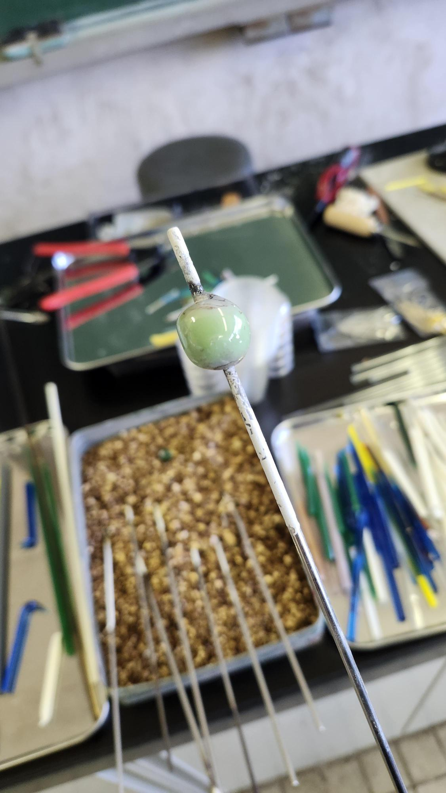

ワークショップ趣旨と目的
「熱と物質のデザイン ― ガラス細工 ―」というテーマのもと、ガラスがどのようにして形をつくることができるのかを探究しました。

素材の物理化学的原理を、
自らの手先と五感で体感する。
ガラスは常温では固体ですが、高温になるとやわらかくなり、熱エネルギーによって自由に形を変えることができます。その変化の背後には、素材の物理的・化学的な加工原理が隠されています。
参加者は実際にガラスを加熱し、引き伸ばし、曲げるなどの操作を通して、「熱」が「形」を生み出すプロセスを体験しました。この活動を通じて、ガラスのものづくりを自らの手で学び、自分の発想を形にする創作の楽しさを実感することを目的とします。
熱流動の制御
重力・表面張力・温度勾配を操り、意図した曲面を創出する技法。
色彩と透過性
異種ガラス棒の融着によるグラデーションや気泡内包の表現探究。
注目の選定作品
独自の視点と卓越した熱制御によって生まれた、本展示を代表するハイライト作品をご覧ください。
全作品 Web展示室
全17名の創作者による情熱の結晶。それぞれの作品コメントは、制作意図と技術的挑戦を約90文字の上品な文調に統一してご紹介いたします。
制作工程の軌跡
安全徹底のガイダンスから始まり、基礎技法の習得、自由制作、そして成果発表に至る6日間の集中プログラム。
安全事項とスケジュールの確認
高熱バーナーの特性理解、保護眼鏡・耐熱器具の着用規程の周知、緊急時対応プロトコルの確認、および全体スケジュールのオリエンテーションを実施。
ガラス管の加工技術習得
火炎の適切な温度領域のコントロール。ガラス管を回転させながら均一に加熱し、溶かして曲げる、引き伸ばす、管同士をつなぐ、切断する等の基礎加工を体得。
トンボ玉の成形と装飾技法
心棒への均一な巻き取りによる球体形成。複数の色ガラス棒を用いたマーブル模様、点打ち、流線文様など、日本伝統の装飾技法を探究。
自由制作 Ⅰ ― 構想の具現化
各自が考案したブランドコンセプトやテーマに基づき、オリジナル作品のプロトタイピングを開始。熱と重力のバランスを見極めながら試行錯誤を展開。
自由制作 Ⅱ ― 本制作と仕上げ
試作の知見を反映した本番成形。微細な凹凸加工や異素材との組み合わせ、冷却工程（徐冷）による熱歪みの緩和など、細部の完成度を徹底追求。
作品発表会と相互講評
完成した作品の展示、コンセプト・技法上の工夫・熱と物質に対する学びのプレゼンテーション。指導陣および受講生全員での相互講評を実施。
熱気薫る工房風景
火炎の音と熱気が満ちる実験工房。真剣な眼差しでガラスと対話し、素材の生命感を捉えた瞬間の記録。
工房 指導陣紹介
化学工学（物質プロセス）、幾何学、そしてものづくり教育のスペシャリストが、安全と創造性を両立させた探究活動を伴走しました。
平林 大介
Mコース（化学工学）
Hカリキュラム1年生にガラス細工を指導。1年生実験実習のほか、応用専門分野物質プロセス領域において「物質プロセス基礎」「コスメティックス」「食品エンジニアリング」を担当。
楢崎 亮
LN系（数学）
幾何学的関心と立体の造形技術に関心を持ったのがきっかけ。火炎によるガラスの変形と造形プロセスを、立体の連続変化や数学的トポロジー（位相幾何学）の観点と結びつけて探究。
北峯 香澄
工房ファシリテーション支援
ガラス材料・バーナー設備や安全保護具の管理、環境整備、受講生一人ひとりの表現意図を汲み取ったきめ細やかな助言と円滑な実習運営をサポート。